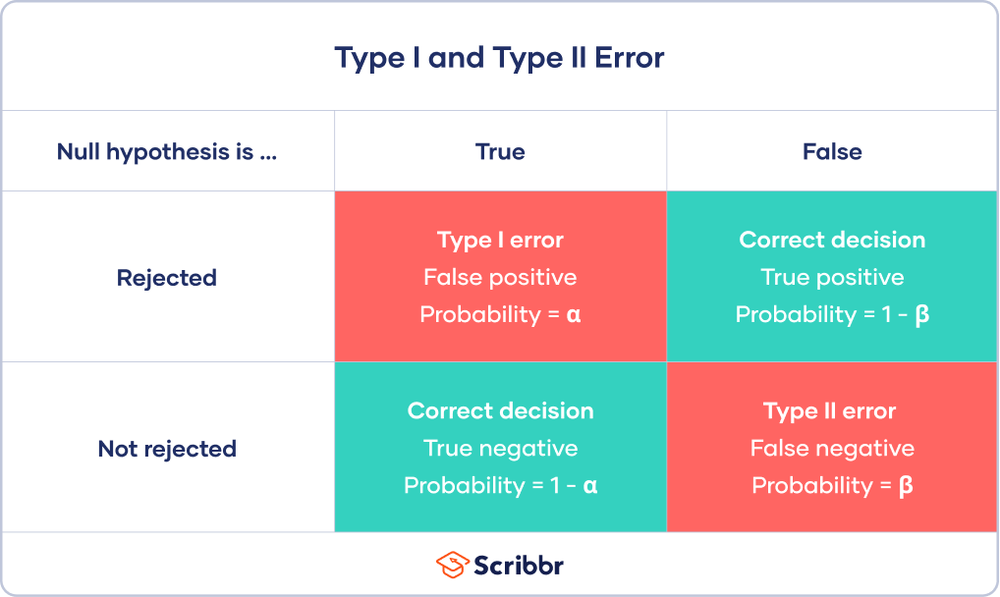

Identify and Perform the proper statistical test for data type/comparison
Calculate and Interpret p-values
Prevent p-hacking and Recognize issues with simultaneously testing multiple hypotheses.
Outline
Concepts and Definitions
Simplifying principles: Common tests as linear models
Types of comparisons and statistical tests
Definitions
Day 1: Relationship between two or more continuous variables
Correlation vs Regression
Fitting it a line to data
Linear regression concepts
Multiple regression
Day 2: Relationship between categorical and continuous variables
Comparing means between two groups (t-Test)
Comparing means between 3 or more groups (ANOVA)
Day 3: Multiple test correction, Bayesian intro, History
Multiple testing correction
Genomics -> Lots of Data -> Lots of Hypothesis Tests
In a typical RNA-seq experiment, we test ~10K different hypotheses. For example, you have 10K genes and for each gene you test whether the mean expression changed in condition A vs condition B. Using a standard p-value cut-off of 0.05, we’d expect 500 genes to be deemed “significant” by chance. Thus, we concerned about False Positives or Type I Errors.

So, we want to control our type 1 error. We can approach this in two different ways.
Control overall α (also known as family-wise error rate or FWER), which will affect the α* for each test. That is, we are controlling the overall probability of making at least one false discovery. Bonferroni and Sidak corrections all control FWER.
Control false discovery rate (FDR). Where FWER controls for the probability for making a type 1 error at all, these procedures allow for type 1 errors (false positives) but control the proportion of these false positives in relation to true positives. This is done by adjusting the decision made for the p-value associated with each individual test to decide rejection or not. Because this will result in a higher type 1 error rate, it has higher power. This affords a higher probability of true discoveries. The step procedures control for FDR.
Bonferroni Correction
**The most conservative of corrections, the Bonferroni correction is also perhaps the most straightforward in its approach. Simply divide α by the number of tests (m).
However, with many tests, α* will become very small. This reduces power, which means that we are very unlikely to make any true discoveries.
Sidak Correction
**α* = 1-(1-α)^(1/m)
Holm’s Step-Down Procedure
**An update of the Bonferroni correction, this procedure is more powerful. Rather than controlling the FWER, Holm’s procedure controls for the false discovery rate (FDR) and is performed after conducting all hypothesis tests and finding associated p-values at α within a set.
The step-down procedure is best illustrated with an example. Say we have three hypotheses, each with the associated p-value:
H1: 0.025
H2: 0.003
H3: 0.01
Step 1: Order p-values from smallest to greatest
H2: 0.003
H3: 0.01
H1: 0.025
Step 2: Use the Holm-Bonferroni formula for the first-ranked (smallest) p-value
α* = α/(n-rank+1)
α* = 0.05/(3–1+1) = 0.0167
Step 3: Compare the first-ranked p-value with the α* calculated from Step 2
0.003 < 0.0167
Because the p-value for H2 is less than the calculated α*, we can reject H2.
Move onto the next ranked p-value and repeat steps 2–3, calculating the α* for its respective rank and comparing it to that p-value. Continue until you reach the first non-rejected hypothesis. You would then fail to reject all following hypotheses.
Hochberg’s Step-Up Procedure
**More powerful than Holm’s step-down procedure, Hochberg’s step-up procedure also seeks to control the FDR and follows a similar process, only p-values are ranked from largest to smallest.
For each ranked p-value, it is compared to the α* calculated for its respective rank (same formula as Holm’s procedure). Testing continues until you reach the first non-rejected hypothesis. You would then fail to reject all following hypotheses.
The conditional probability of the event \(A\) conditional on the event \(B\) is given by \[
P(A \mid B) = \frac{P(A \,\&\, B)}{P(B)}.
\]
This section introduces how the Bayes’ rule is applied to calculating conditional probability, and several real-life examples are demonstrated. Finally, we compare the Bayesian and frequentist definition of probability.
Bayes’ Rule and Diagnostic Testing
To better understand conditional probabilities and their importance, let us consider an example involving the human immunodeficiency virus (HIV). In the early 1980s, HIV had just been discovered and was rapidly expanding. There was major concern with the safety of the blood supply. Also, virtually no cure existed making an HIV diagnosis basically a death sentence, in addition to the stigma that was attached to the disease.
These made false positives and false negatives in HIV testing highly undesirable. A false positive is when a test returns postive while the truth is negative. That would for instance be that someone without HIV is wrongly diagnosed with HIV, wrongly telling that person they are going to die and casting the stigma on them. A false negative is when a test returns negative while the truth is positive. That is when someone with HIV undergoes an HIV test which wrongly comes back negative. The latter poses a threat to the blood supply if that person is about to donate blood.
The probability of a false positive if the truth is negative is called the false positive rate. Similarly, the false negative rate is the probability of a false negative if the truth is positive. Note that both these rates are conditional probabilities: The false positive rate of an HIV test is the probability of a positive result conditional on the person tested having no HIV.
The HIV test we consider is an enzyme-linked immunosorbent assay, commonly known as an ELISA. We would like to know the probability that someone (in the early 1980s) has HIV if ELISA tests positive. For this, we need the following information. ELISA’s true positive rate (one minus the false negative rate), also referred to as sensitivity, recall, or probability of detection, is estimated as
\[
P(\text{ELISA is positive} \mid \text{Person tested has HIV}) = 93\% = 0.93.
\]
Its true negative rate (one minus the false positive rate), also referred to as specificity, is estimated as
\[
P(\text{ELISA is negative} \mid \text{Person tested has no HIV}) = 99\% = 0.99.
\]
Also relevant to our question is the prevalence of HIV in the overall population, which is estimated to be 1.48 out of every 1000 American adults. We therefore assume
Note that the above numbers are estimates. For our purposes, however, we will treat them as if they were exact.
Our goal is to compute the probability of HIV if ELISA is positive, that is \(P(\text{Person tested has HIV} \mid \text{ELISA is positive})\). In none of the above numbers did we condition on the outcome of ELISA. Fortunately, Bayes’ rule allows is to use the above numbers to compute the probability we seek. Bayes’ rule states that
\[\begin{equation}
P(\text{Person tested has HIV} \mid \text{ELISA is positive}) = \frac{P(\text{Person tested has HIV} \,\&\, \text{ELISA is positive})}{P(\text{ELISA is positive})}.
(\#eq:HIVconditional)
\end{equation}\]
This can be derived as follows. For someone to test positive and be HIV positive, that person first needs to be HIV positive and then secondly test positive. The probability of the first thing happening is \(P(\text{HIV positive}) = 0.00148\). The probability of then testing positive is \(P(\text{ELISA is positive} \mid \text{Person tested has HIV}) = 0.93\), the true positive rate. This yields for the numerator
\[\begin{multline}
P(\text{Person tested has HIV} \,\&\, \text{ELISA is positive}) \\
\begin{split}
&= P(\text{Person tested has HIV}) P(\text{ELISA is positive} \mid \text{Person tested has HIV}) \\
&= 0.00148 \cdot 0.93
= 0.0013764.
\end{split}
(\#eq:HIVjoint)
\end{multline}\]
The first step in the above equation is implied by Bayes’ rule: By multiplying the left- and right-hand side of Bayes’ rule by \(P(B)\), we obtain \[
P(A \mid B) P(B) = P(A \,\&\, B).
\]
The denominator in @ref(eq:HIVconditional) can be expanded as
\[\begin{multline*}
P(\text{ELISA is positive}) \\
\begin{split}
&= P(\text{Person tested has HIV} \,\&\, \text{ELISA is positive}) + P(\text{Person tested has no HIV} \,\&\, \text{ELISA is positive}) \\
&= 0.0013764 + 0.0099852 = 0.0113616
\end{split}
\end{multline*}\]
where we used @ref(eq:HIVjoint) and
\[\begin{multline*}
P(\text{Person tested has no HIV} \,\&\, \text{ELISA is positive}) \\
\begin{split}
&= P(\text{Person tested has no HIV}) P(\text{ELISA is positive} \mid \text{Person tested has no HIV}) \\
&= \left(1 - P(\text{Person tested has HIV})\right) \cdot \left(1 - P(\text{ELISA is negative} \mid \text{Person tested has no HIV})\right) \\
&= \left(1 - 0.00148\right) \cdot \left(1 - 0.99\right) = 0.0099852.
\end{split}
\end{multline*}\]
Putting this all together and inserting into @ref(eq:HIVconditional) reveals \[\begin{equation}
P(\text{Person tested has HIV} \mid \text{ELISA is positive}) = \frac{0.0013764}{0.0113616} \approx 0.12.
(\#eq:HIVresult)
\end{equation}\] So even when the ELISA returns positive, the probability of having HIV is only 12%. An important reason why this number is so low is due to the prevalence of HIV. Before testing, one’s probability of HIV was 0.148%, so the positive test changes that probability dramatically, but it is still below 50%. That is, it is more likely that one is HIV negative rather than positive after one positive ELISA test.
Questions like the one we just answered (What is the probability of a disease if a test returns positive?) are crucial to make medical diagnoses. As we saw, just the true positive and true negative rates of a test do not tell the full story, but also a disease’s prevalence plays a role. Bayes’ rule is a tool to synthesize such numbers into a more useful probability of having a disease after a test result.
What is the probability that someone who tests positive does not actually have HIV?
We found in @ref(eq:HIVresult) that someone who tests positive has a \(0.12\) probability of having HIV. That implies that the same person has a \(1-0.12=0.88\) probability of not having HIV, despite testing positive.
If the individual is at a higher risk for having HIV than a randomly sampled person from the population considered, how, if at all, would you expect $P(\text{Person tested has HIV} \mid \text{ELISA is positive})$ to change?
If the person has a priori a higher risk for HIV and tests positive, then the probability of having HIV must be higher than for someone not at increased risk who also tests positive. Therefore, \(P(\text{Person tested has HIV} \mid \text{ELISA is positive}) > 0.12\) where \(0.12\) comes from @ref(eq:HIVresult).
One can derive this mathematically by plugging in a larger number in @ref(eq:HIVpositive) than 0.00148, as that number represents the prior risk of HIV. Changing the calculations accordingly shows \(P(\text{Person tested has HIV} \mid \text{ELISA is positive}) > 0.12\).
If the false positive rate of the test is higher than 1%, how, if at all, would you expect $P(\text{Person tested has HIV} \mid \text{ELISA is positive})$ to change?
If the false positive rate increases, the probability of a wrong positive result increases. That means that a positive test result is more likely to be wrong and thus less indicative of HIV. Therefore, the probability of HIV after a positive ELISA goes down such that \(P(\text{Person tested has HIV} \mid \text{ELISA is positive}) < 0.12\).
Bayes Updating
In the previous section, we saw that one positive ELISA test yields a probability of having HIV of 12%. To obtain a more convincing probability, one might want to do a second ELISA test after a first one comes up positive. What is the probability of being HIV positive if also the second ELISA test comes back positive?
To solve this problem, we will assume that the correctness of this second test is not influenced by the first ELISA, that is, the tests are independent from each other. This assumption probably does not hold true as it is plausible that if the first test was a false positive, it is more likely that the second one will be one as well. Nonetheless, we stick with the independence assumption for simplicity.
In the last section, we used \(P(\text{Person tested has HIV}) = 0.00148\), see @ref(eq:HIVpositive), to compute the probability of HIV after one positive test. If we repeat those steps but now with \(P(\text{Person tested has HIV}) = 0.12\), the probability that a person with one positive test has HIV, we exactly obtain the probability of HIV after two positive tests. Repeating the maths from the previous section, involving Bayes’ rule, gives
\[\begin{multline}
P(\text{Person tested has HIV} \mid \text{Second ELISA is also positive}) \\
\begin{split}
&= \frac{P(\text{Person tested has HIV}) P(\text{Second ELISA is positive} \mid \text{Person tested has HIV})}{P(\text{Second ELISA is also positive})} \\
&= \frac{0.12 \cdot 0.93}{
\begin{split}
&P(\text{Person tested has HIV}) P(\text{Second ELISA is positive} \mid \text{Has HIV}) \\
&+ P(\text{Person tested has no HIV}) P(\text{Second ELISA is positive} \mid \text{Has no HIV})
\end{split}
} \\
&= \frac{0.1116}{0.12 \cdot 0.93 + (1 - 0.12)\cdot (1 - 0.99)} \approx 0.93.
\end{split}
(\#eq:Bayes-updating)
\end{multline}\]
Since we are considering the same ELISA test, we used the same true positive and true negative rates as in Section @ref(sec:diagnostic-testing). We see that two positive tests makes it much more probable for someone to have HIV than when only one test comes up positive.
This process, of using Bayes’ rule to update a probability based on an event affecting it, is called Bayes’ updating. More generally, the what one tries to update can be considered ‘prior’ information, sometimes simply called the prior. The event providing information about this can also be data. Then, updating this prior using Bayes’ rule gives the information conditional on the data, also known as the posterior, as in the information after having seen the data. Going from the prior to the posterior is Bayes updating.
The probability of HIV after one positive ELISA, 0.12, was the posterior in the previous section as it was an update of the overall prevalence of HIV, @ref(eq:HIVpositive). However, in this section we answered a question where we used this posterior information as the prior. This process of using a posterior as prior in a new problem is natural in the Bayesian framework of updating knowledge based on the data.
Modern Statistics, Beer, and Eugenics
Image courtesy of the American Philosophical Society, Philadelphia, USA.
Fathers of statistics
The torch was passed within the triumvirate of Galton, Pearson, and Fisher.
Sir Francis Galton (1822-1911)
from galton.org
Discovered regression to the mean
Re-discovered correlation and regression and discovered how to apply these in anthropology, psychology, and more
Defined the concept of standard deviation
Established the field of Eugenics in 1883
Darwin’s cousin.
Galton’s reasoning for coining the term eugenics:
“We greatly want a brief word to express the science of improving stock, which…takes cognisance of all influences that tend in however remote a degree to give the more suitable races or strains of blood a better chance of prevailing speedily over the less suitable than they otherwise would have had.”
“[they] will develop into a parasitic race…Taken on the average, and regarding both sexes, this alien Jewish population is somewhat inferior physically and mentally to the native population.”
These horrendous views did not appear to be common at UCL in the 1930s. For example, they were not held by JBS Haldane, Egon Pearson (son of Karl), and Lionel Penrose.
‘Race’ cannot be biologically defined due to genetic variation among human individuals and populations. (A) The old concept of the “five races:” African, Asian, European, Native American, and Oceanian. (B) Actual genetic variation in humans.
Polygenic Traits, Human Embryos, and Eugenic Dreams
An academic study debunked the idea of “Screening Human Embryos for Polygenic Traits,” but the CEO of the company Stephen Hsu cofounded announced that they had screened human embryos for polygenic traits.


_cover.jpeg)